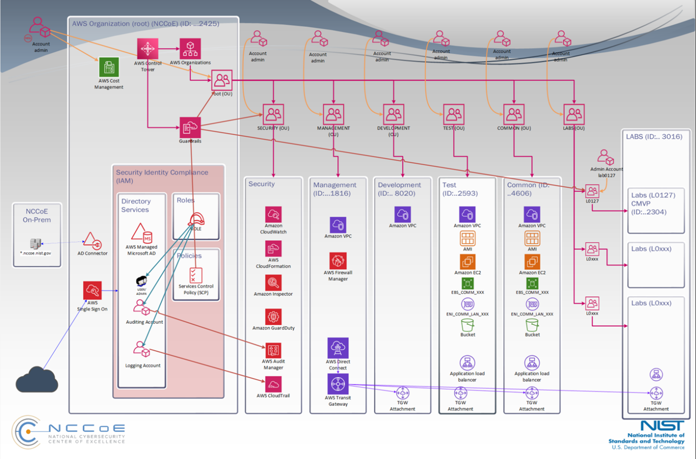

AWS Account Organization#
The AWS research environment consists of multiple accounts that follow best practices to ensure the isolation and segregation of administrative functions, security, and each independent research lab. It is deployed leveraging AWS Control Tower for orchestration and AWS Organizations to consolidate the various accounts into the NCCoE Organization and manage them centrally. Various Organizational Units (OU) were also created to easily allocate resources, group accounts, and apply governance policies to accounts or groups.

Figure 1: AWS account organization structure#
Payer Account#
The Payer account is the NCCoE Organization root account. It is the account from which additional accounts will be created within or invited to join the NCCoE Organization. This account is used for top-level administration of the environment, including configuring external integrations, consolidating billing, and controlling policies.
Management Account#
The Management account is a core supporting infrastructure account within the NCCoE Organization and was created through AWS Control Tower during the creation of the landing zone. The management account hosts the AWS Direct Connect, AWS Transit Gateway (TG), Security Virtual Private Cloud (VPC), and infrastructure services.
Security - Log Archives Account#
The Log Archive account is a core supporting infrastructure account within the NCCoE Organization and was created through AWS Control Tower during the creation of the landing zone. The Log Archive account contains a central Amazon S3 bucket for storing a copy of the AWS CloudTrail trails and AWS Config recordings.
Security - Log Audit Account#
The Log Audit account is a core supporting infrastructure account within the NCCoE Organization and was created through AWS Control Tower during the creation of the landing zone. The Log Audit account is intended for security and compliance teams to perform audits and security operations.
Test Account#
The test account is a core supporting infrastructure account within the NCCoE Organization and was created through AWS Organizations. The test account is an operational account used for testing policies and services before moving them into production.
Dev Account#
The dev account is a core supporting infrastructure account within the NCCoE Organization and was created through AWS Organizations. The dev account is an operational account used for developing policies and services prior to moving them into testing.
Common Account#
The Common account is a core supporting infrastructure account within the NCCoE Organization and was created through AWS Organizations. The Common account is an operational account to hold shared services for various research labs.
LabX Account#
“LabX” account represents any new account added to the environment in support of specific research. All new Lab accounts will be added via AWS Organizations to ensure baseline security rules and policies are applied.
Email Account Structure#
Each AWS account requires an email address. To standardize the email account structure, the NCCoE created a single organizational email account and utilized the “plus email addressing” feature, also known as “sub-addressing,” for each member account joined to the organization. This ensures that all email addresses associated with member accounts follow a standardized naming structure.